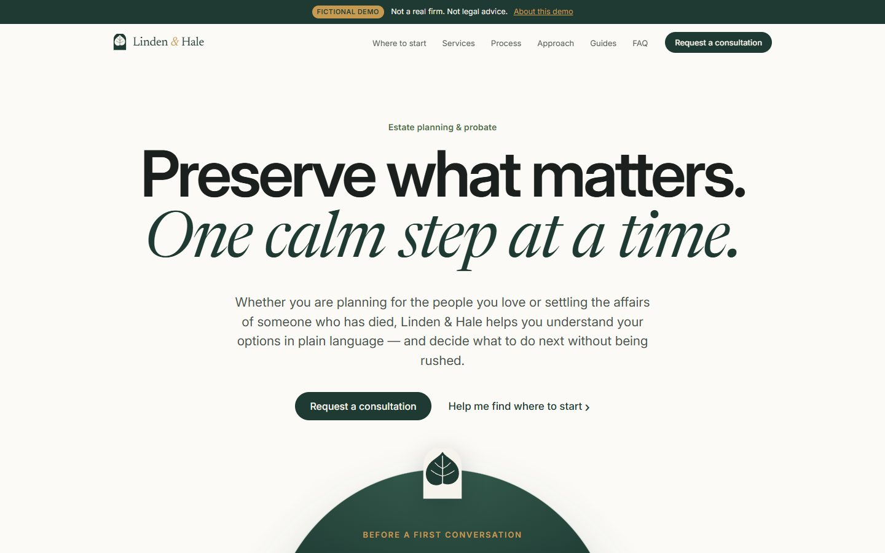
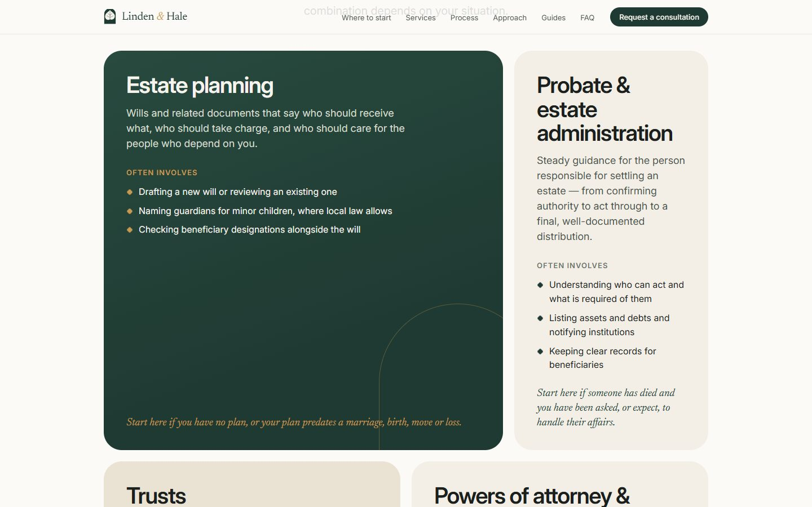

03Website direction & build · Fictional website concept
A calm next step for anxious visitors.
Linden & Hale: a fictional estate-planning and probate practice, built as a complete one-page website from a supplied brand identity.
Linden & Hale is fictional. Not a real firm and not legal advice.
- Project
- Fictional website concept
- Role
- Project direction & brand assets
- Deliverable
- Responsive one-page practice website

The brief
People arrive during hard moments. How does a website feel calm and credible, and still help them act?
Visitors to an estate-planning or probate site may be planning for family, facing illness or settling the affairs of someone who has died. The site has to help without inventing attorneys, credentials or results.
- 01Feel calm and credible
- 02Help visitors find a sensible first step
- 03Offer a safe way to ask for help
Writing
Write for the visitor, not the firm.
Earlier versions pitched a website to law firms. Linden & Hale speaks directly to the person who needs help.
Before they speak to your firm, they meet your website.
Preserve what matters, one calm step at a time.
I design and build digital experiences that give legal teams a clearer, more distinctive first impression.
Whether you are planning for the people you love or settling the affairs of someone who has died, Linden & Hale helps you understand your options in plain language.
Plain language first
Each document and decision explained before anyone is asked to sign anything.
Orientation, not advice
Jurisdiction-dependent points are phrased generally and labelled for verification.
No invented people
Attorney profiles would only appear once supplied and verified by a real firm.
Where should I start? Five situations
- I want to plan ahead for my family
- Someone close to me has died
- I’ve been named as an executor or trustee
- I want to plan for illness or incapacity
- I’m not sure yet
Design
Let the supplied identity set the mood.
The supplied mark and palette set the mood; the redesign gives them a crisper, product-page rhythm. Every colour keeps one job.
#1F3A32Structure and action#F6F3ECReading surface#EAE3D3Warm panels#C79A52Accent text on Evergreen only#9C3B27Alerts only

The arch as the hero object
The “before a first conversation” checklist sits in a large Evergreen arch, crowned by the leaf-and-arch mark, like a product shot.
Big type, few words per line
A centred hero, one primary action and generous space. The serif italic line carries the practice’s calm voice.
Services as a bento grid
Four rounded tiles in Limestone, Vellum and Evergreen. The core service leads in Evergreen; Honey stays on Evergreen only.
Development
Usable before the JavaScript loads.
A single responsive Astro page with its own stylesheet and a small progressive-enhancement script.
- Astro
- Hand-written CSS
- Progressive enhancement
What it does
- Five-situation decision aid
- Four services, a four-step process and an approach section
- Three labelled sample guides and six FAQs
- Consultation request that validates locally
How it was checked
- Menu and FAQs are native disclosures
- The chooser is radio buttons revealed with CSS :has(), so it works without JavaScript
- The form asks for no contact details and sends or stores nothing
- Scroll reveals switch off under reduced motion
Evolution
From a pitch to a practice.
Four versions of the same idea. Each one moved closer to the person reading it.
Northstar Legal concept
A seven-stage interactive demonstration of positioning, structure, copy, visual direction, interaction, responsive behaviour and the consultation path.

Cinematic proposal
“Before they speak to your firm, they meet your website.”
A motion-led pitch aimed at law firms, built around licensed stock footage.

Linden & Hale
“Preserve what matters, one calm step at a time.”
Rebuilt as a complete practice website from a supplied identity, written for the visitor rather than the firm.

Crisp redesign
“Preserve what matters. One calm step at a time.”
Same content and safeguards, rebuilt with a product-page rhythm: a centred hero, the arch as a product shot, bento service tiles and calm scroll reveals.
- Centred hero
- Arch checklist
- Bento services
- Segmented chooser
Hero 
New: services as a bento grid
The result
A complete site you can explore.
A calm, complete practice website with a decision aid, services, process, guides, FAQs and a safe consultation request. No legal outcome or business result is claimed.
Ahsan: project direction; supplied the Linden & Hale brand assets. AI-assisted delivery: Dave, website copy draft and implementation.
Linden & Hale is fictional. This is not commissioned client work, legal advice or evidence of conversion lift. No attorney identity, credential, jurisdiction, client quotation or legal outcome is claimed.